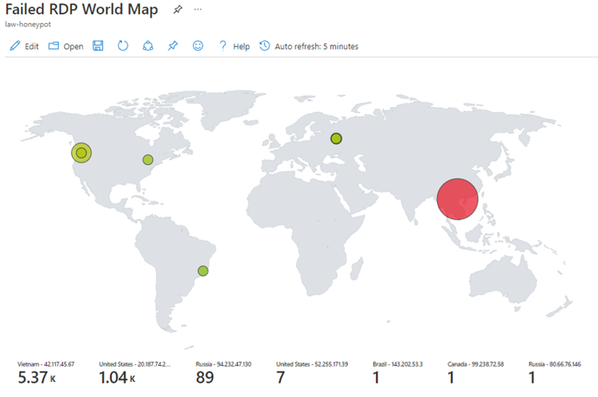
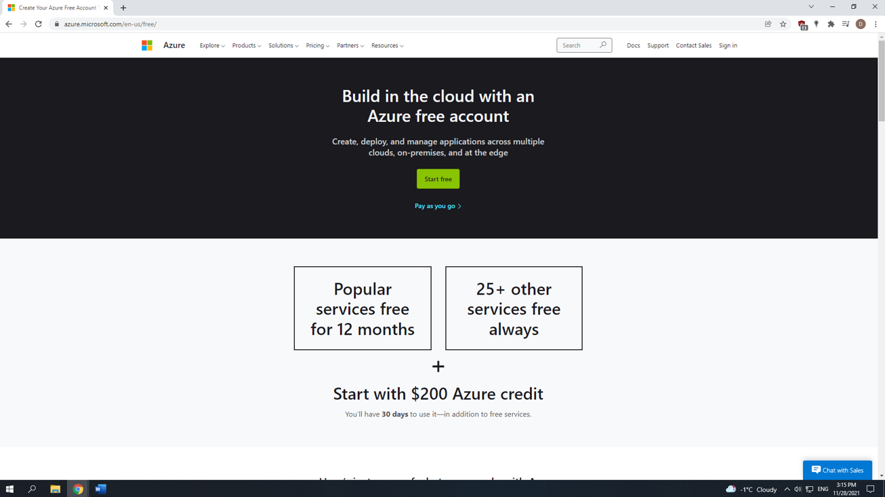

In this tutorial, I will be describing the process of setting up Azure Sentinel (SIEM) as well as a Virtual Machine (VM) in the cloud which will function as our honeypot.
This honeypot will be vulnerable to the internet, and we will be monitoring and logging attacks from different IP addresses from various countries around the world. We will then take that data
and display it on a map so we can visually see where the attacks are coming from. The logging attacks will consist of failed Remote Desktop Protocol (RDP) logins.
Estimated tutorial duration: 1-1.5 hours

By following this tutorial you will to gain knowledge in the following:
a. Azure Portal
b. Azure Sentinel
c. Kusto Query Language (KQL)
d. Network Security Groups
Index
0) Prerequisites
1) Create a free Azure subscription
2) Create a Virtual Machine
3) Network Security Groups
0) Prerequisites
i. PowerShell Script for the Lab:
ii. Azure Trial: https://azure.microsoft.com/en-us/free/
iii. Sentinel Map Query:
1) Create a free Azure subscription
i. First start by setting up a free Azure account (https://azure.microsoft.com/en-us/free/). A $200 Azure credit will be assigned to your account for up to 30 days.

2) Create a Virtual Machine
i. This is the machine that will be exposed on the internet. To create one, open -> https://portal.azure.com/#home and input “Virtual machines” and select it on the search bar.